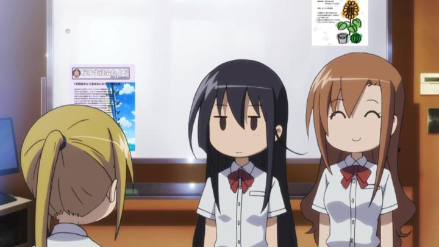

Disclaimer: This review covers Season 1 (2010), Season 2 (2014) and the 1st Movie (2017) of "Seitokai Yakuindomo," as released on one Bluray set by Sentai Filmworks for North America.One of the first few episodes starts with a scene that nicely defines the tone of the anime "Seitokai Yakuindomo." The protagonist, Tsuda, is sitting by himself before class starts. He's reminiscing about his first few weeks at Osai Academy, an all-girls' school that just recently became a co-ed, and he's one of the few boys on site. As part of the student council, he's gotten a crash course on the school, and while his classmates are "a little strange" sometimes, Tsuda admits to himself that he's enjoying his lively school life. His inner monologue is interuptted when off-screen, a girl enters the classroom, yelling out "does anyone have a sanitary pad?" Again, off-screen, the girls in the class murmur without judgement, and one volunteers an extra. A small white square flies across the screen. Tsuda is quiet in this awkward moment, a moment that's seemingly only awkward to him. And perhaps the audience. Cut to the opening theme song. "Seitokai Yakuindomo" was a infamous anime in the early 2010's for its raunchy humour, but without a distributor, discussion of it was exclusively online. It was a meme anime before "internet memes" were a common phrase. It wasn't until several years later, in 2019, that Sentai Filmworks finally picked up and released the series, in a complete subtitled-only Bluray set. At the time, the complete set included two seasons and a feature-length movie (the OVA's were not included). You can imagine how annoyed Sentai was when a second film was released in 2021, years after the show should have been complete - Sentai released that too on its own, but I've not seen that. At a glance, the anime's premise seems commonplace, as seen in dozens of other anime with high-school settings. Tsuda is the new kid at a high school that only recently opened its doors to boys, so he's surrounded by a massive existing student body of cute girls. Things are primed for a harem of girlfriends, or at least happy misunderstandings fueled by hormones. By chance, the first person Tsuda meets on his first day is Shino, the stoic student council president, and while reprimanding Tsuda for his school uniform, she signs him on to join her on the council as vice-president, as a "representative" of the new gender that was now on campus. Shino is the lead of the group, alongside Aria (the motherly secretary) and Suzu (the bright, but comically short, treasurer). In spite of genre norms, there's no real romance for Tsuda with these girls (except perhaps for Shino, with a crush that develops towards the end of Season 1), and not even much fanservice or romantic comedy. The hook here is that the girls, Shino and Aria in particular, are perverts, and not having been around boys often, are at least "curious." So most of their open conversation includes a sex joke or reference. This seems to be the case for the entire student body, and even some of the teachers. After all, being surrounded exclusively by the same gender for so long made the school a safe space for such social barriers to be let down, and now that things have changed, it'll take time for everyone to learn what's "appropriate." Admittedly, not having romance at the center of the show was refreshing given the scenario. This is meant to be a pure comedy. But is it funny? The sex jokes, with most of the words bleeped out, are shocking at first, although perhaps not with as great an impact in 2025 as it had in 2010. If it's funny, it's in a "(spit out your drink) I can't believe they just said that!" sort of way. The issue is that this is repeated, over and over. It's mostly a one-note show, based on a comic series made of short panels, like Western newspaper comic strips. Each joke and vignette is only 15 - 30 seconds, with a introduction, setup, and a profane punchline. There's no character development. No real plot or story. If you've seen a few episodes, you've seen them all. Creativity and breaking the fourth wall can only go so far. Even the show seems aware of its limitations, so it sometimes brings its studnets out to different locations or events, as per tradition in anime. They take class trips to different towns in Japan. They go to hot springs. They go to the beach. They have a school festival. After the first few episodes, the jokes vary a bit to include general character humour (a cute joke is not drawing Suzu in conversations, but putting an arrow on the screen downwards to show she's there, just too short to be at eye-level) and not just references to body positions, suspiciously shaped vibrating toys, or Japanese-language sex puns. But things still feel like they're going through the standard motions of the genre. There are some occasional odd directoral choices in the first season, like some side characters in the opening not appearing until the one or two episodes from the end, as if they had forgotten to write them in before. In the case of Shino, her personality whips from confident to whiny based on whoever wrote that particular episode, and her character is noticably inconsistent.  It's a great property of anime that, regardless of the content, if the characters are charming and non-offensive, you grow to love them if you see enough episodes. By the end of the first season, I had a certain nostalgia and fondness for the characters and their school. By the second season, I was excited to see the characters again as their voices narrate the opening credits. The opening and ending themes are lively, and the music helps the setting resonate in my mind and feel familiar. I can't tell you why a second season was produced, let alone a movie... most anime like this would never last beyond a single season, and there's nothing in the "story" to make extra episodes worthwhile... but I'd be lying if I said I wouldn't watch more. I laughed when I saw that the studio GoHands ran the production of "Seitokai." GoHands has become one of the most infamous production houses in anime, for their bold experiments in bridging the gap between 2D and 3D... by using 3D camera motion and environments with 2D characters, an effect that's frequently described as dizzying. Broadly, the public seems to hate their house style, but I think most would agree the studio is one of the most ambitious in the industry for their attempts, for better or for worse. Personally, I love and respect their boldness, even if it doesn't always look quite right. Anyway... "Seitokai" was one of the studio's earliest shows, before "K" and "Hand Shakers," and before that polarizing 3D style was developed. So "Seitokai" looks shockingly ordinary. And unfortunately, cheap. Character designs are fairly basic and uninspired, pleasant but uninteresting. The animation is limited, doing the bare minimum to render spoken conversations and jokes, which makes up the entirety of the series. In 2010, Season 1 looks bad against its peers, and not at all with the ambition GoHands is known for today.It was a shock then to watch the first episode of Season 2, and this franchise as a whole is an interesting time-capsule to the studio as it developed its style. That first episode makes an excuse to directly use the wild 3D camera motion it discovered in "K" a couple years earlier, one part of which is a first-person perspective of a dog running through the school halls. It's a nigh-and-day contrast, and for what it's worth, looked great. Had the rest of the show looked like that, the series would be far more noteworthy. Alas, beyond that first episode, Season 2 is basically the same as the first season, perhaps just a little sharper and cleaner, more suitable for HD even if there isn't much of interest to look at. And the theatrical movie, at barely an hour long, acts like a bonus extended episode to Season 2 (complete with the same opening credits) - the animation quality beyond an opening chase sequence is identical, and the plot is still just a series of jokes stringed together (plus a few cute jokes knowing it was being screened in a theater setting). "Seitokai Yakuindomo" lives and dies by its sense of humour, which gets dry quickly, and doesn't have much else to moisten it. The thing is, it's outrageous jokes seem like it'd work better watching with friends, but given the awkwardness of the subject matter, I wouldn't dare suggest you watch this with your anime club. Or, perhaps fitting with the premise, maybe the series is best watched by adult girls and their girlfriends, without the judgement or confusion of boys making things uncomfortable.
- "Ani" More reviews can be found at : https://2danicritic.github.io/ Previous review: review_Scrapped_Princess Next review: review_Sengoku_Basara_-_Samurai_Kings